12.4 DQN 확장
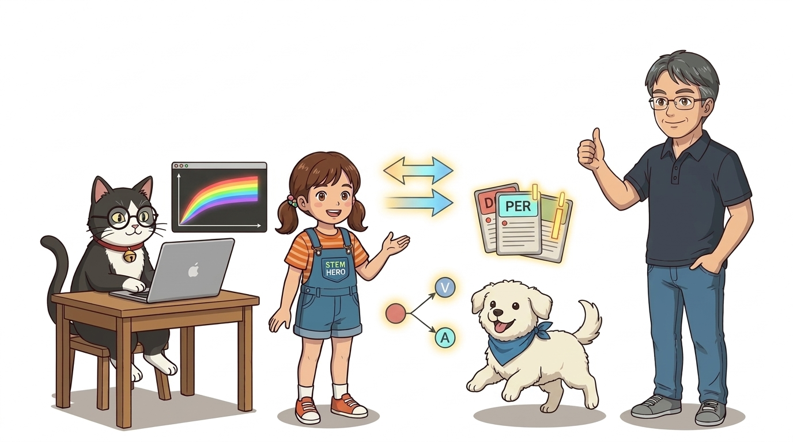
DQN 3대 확장 기술과 Rainbow 아키텍처
 그림 12-4-0 행동 선택과 가치 평가를 분리한 Double DQN 포드, 배울 게 많은 오차 카드를 우선 추출하는 PER 포드, 상태 가치와 행동 이득을 분리한 Dueling DQN 포드를 살펴보는 도로시와 지니, 그리고 이들을 통합한 Rainbow DQN의 위력을 강의하는 교수님
그림 12-4-0 행동 선택과 가치 평가를 분리한 Double DQN 포드, 배울 게 많은 오차 카드를 우선 추출하는 PER 포드, 상태 가치와 행동 이득을 분리한 Dueling DQN 포드를 살펴보는 도로시와 지니, 그리고 이들을 통합한 Rainbow DQN의 위력을 강의하는 교수님
심층 강화학습의 르네상스를 연 3대 확장
DQN은 딥러닝과 강화학습의 융합을 성공시킨 전설적인 알고리즘입니다.
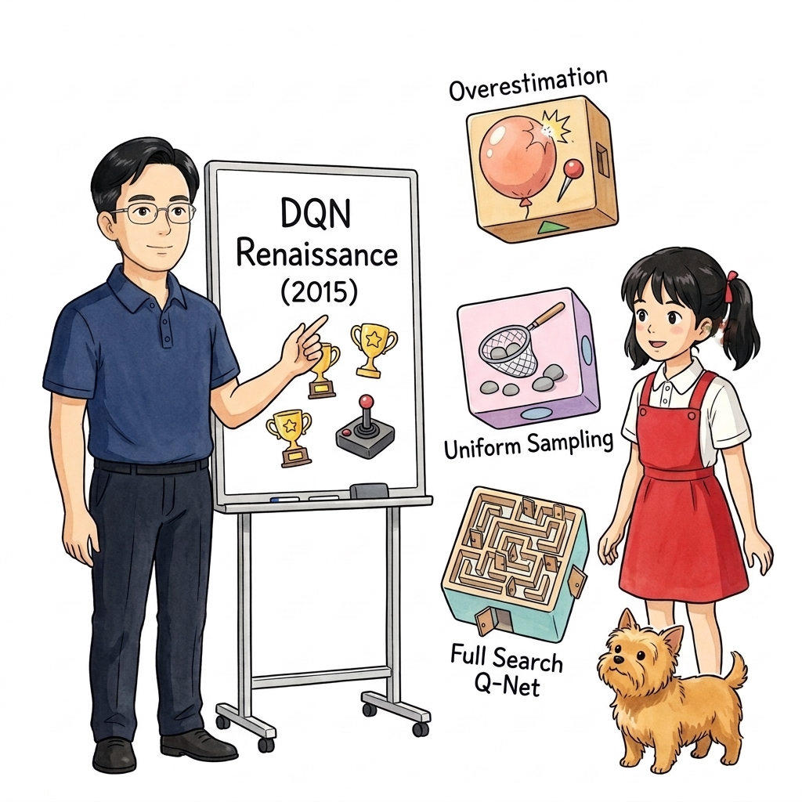
그림 12-4-01-B 심층 강화학습의 르네상스를 연 DQN의 역사적 성공과 극복해야 할 3대 한계(과대평가, 균등 샘플링, 구조적 비효율)를 설명하는 이호진 교수님과 도로시, 토토하지만 초기 DQN 역시 몇 가지 수학적·구조적 한계를 안고 있었습니다:
- 가치 과대평가(Overestimation) 편향
- 비효율적인 무작위 균등 샘플링
- 모든 행동을 일일이 다 해봐야만 알 수 있는 비효율적인 신경망 구조
전 세계 연구자들은 이 결점들을 극복하기 위해 수많은 기법을 쏟아냈으며, 이번 절에서는 그중 가장 대표적인 3대 핵심 확장 기술을 집중 탐구합니다.
 그림 12-4-01 DQN의 3대 확장 계보: Double DQN, 우선순위 경험 재생(PER), Dueling DQN
그림 12-4-01 DQN의 3대 확장 계보: Double DQN, 우선순위 경험 재생(PER), Dueling DQN
12.4.1 Double DQN
기존 DQN의 목표 신경망 복습
첫 번째 혁신 기법은 하도 판 하셀트(Hado van Hasselt) 등이 제안한 Double DQN [13]입니다.
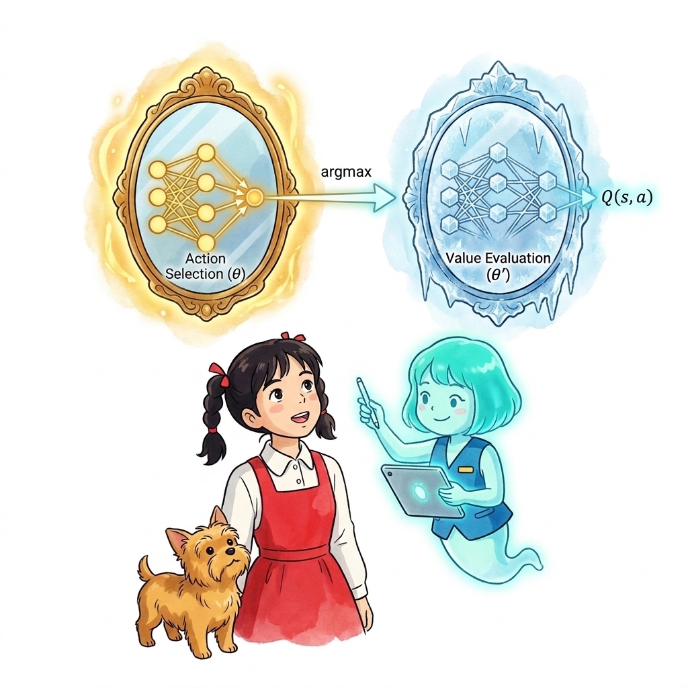
그림 12-4-01-C 행동을 선택하는 활성 신경망(θ)과 가치를 평가하는 목표 신경망(θ’)을 마법의 거울처럼 분리하여 과대평가 편향을 제거하는 Double DQN의 핵심 원리Double DQN을 이해하기 위해, 먼저 12.2절에서 배운 기존 DQN의 목표 신경망(Target Network) 구조를 복습해봅시다:
- 활성(메인) 신경망: 매 스텝 가중치 파라미터 $\theta$(세타)가 경사하강법으로 갱신됨
- 목표 신경망: 얼음처럼 고정되어 있다가 주기적으로만 복사되는 파라미터 $\theta’$(세타 프라임)
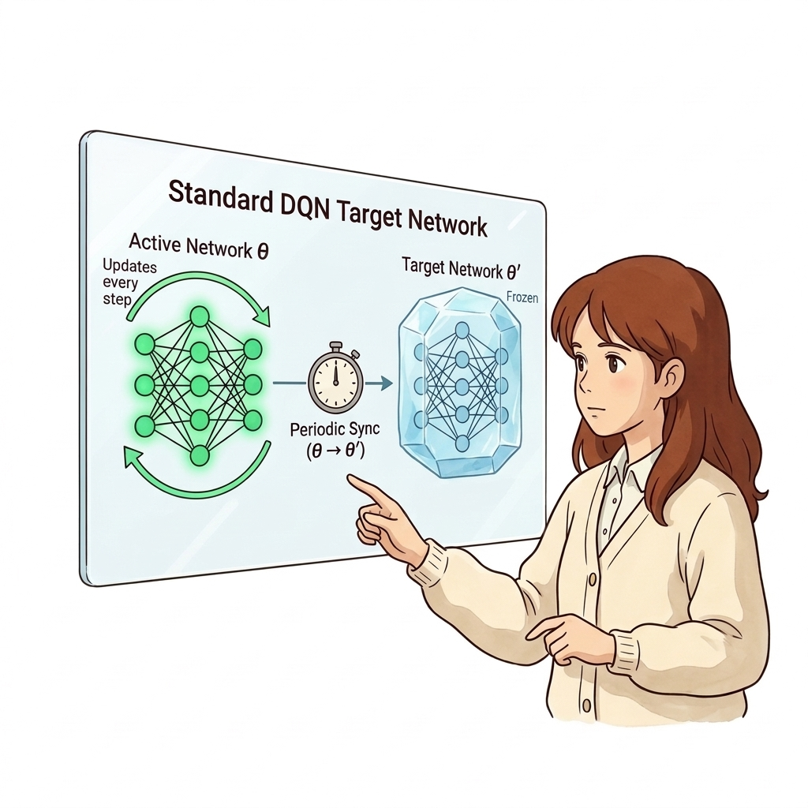
그림 12-4-02 기존 DQN의 목표 신경망 복습: 활성 신경망 θ와 주기적으로 동기화되는 얼어붙은 목표 신경망 θ’두 개의 Q-함수: $Q_{\theta}$와 $Q_{\theta’}$
- 메인 신경망이 근사하는 행동 가치 함수: $Q_{\theta}(s, a)$
- 목표 신경망이 근사하는 행동 가치 함수: $Q_{\theta’}(s, a)$
메인 신경망 파라미터 $\theta$는 에이전트의 현재 지식을 나타내고, 목표 신경망 파라미터 $\theta’$는 동기화되기 전까지 고정된 기준점 역할을 합니다.
 그림 12-4-03 매개변수가 서로 다른 두 신경망: 메인 신경망 θ와 목표 신경망 θ’의 역할 분담
그림 12-4-03 매개변수가 서로 다른 두 신경망: 메인 신경망 θ와 목표 신경망 θ’의 역할 분담
두 신경망의 수식 표현
 그림 12-4-04 두 신경망이 근사하는 가치 함수 $Q_{\theta}(s, a)$와 $Q_{\theta’}(s, a)$의 수식 정의
그림 12-4-04 두 신경망이 근사하는 가치 함수 $Q_{\theta}(s, a)$와 $Q_{\theta’}(s, a)$의 수식 정의
이때 기존 DQN이 목표 가치(TD Target)를 계산하던 공식은 다음과 같았습니다:
\[\text{TD Target}_{\text{DQN}} = R_t + \gamma \max_a Q_{\theta'}(S_{t+1}, a)\]- $\gamma$(감마): 미래 보상 할인율 ($0 \le \gamma < 1$)
- $\max_a$(맥스 에이): 다음 상태에서 가장 큰 Q-값을 선택하는 최댓값 연산자
기존 DQN TD 목표 공식의 한계
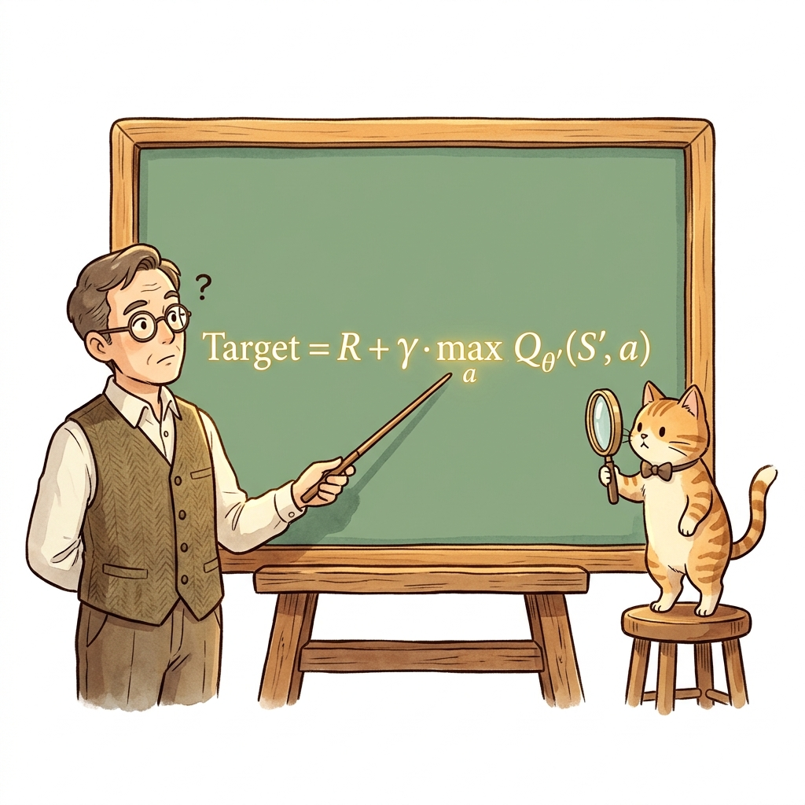
그림 12-4-05 기존 DQN의 TD 목표 공식: $R_t + \gamma \max_a Q_{\theta’}(S_{t+1}, a)$과 $\max$ 연산자겉보기에는 아무런 문제가 없어 보이는 이 공식에는 아주 치명적인 수학적 함정이 숨어 있습니다. 바로 $\max_a$ 연산자가 만들어내는 ‘과대평가 편향(Overestimation Bias)’입니다.
$\max$ 연산자의 함정: 주사위 비유
[!TIP] 왜 $\max$를 취하면 값이 뻥튀기될까요? (주사위 비유)
주사위 1개를 굴렸을 때 눈의 기댓값은 정확히 $3.5$입니다.
그런데 주사위 5개를 동시에 던진 뒤 “그중 가장 큰 눈($\max$)”을 고르면 어떻게 될까요?
최댓값의 평균은 $3.5$가 아니라 무려 $4.45$ 이상으로 훌쩍 치솟습니다!
신경망이 예측하는 $Q_{\theta’}(s, a)$에는 항상 약간의 근사 오차와 노이즈가 섞여 있습니다.
어떤 행동은 우연히 $+1$만큼 높게 예측되고, 어떤 행동은 $-1$만큼 낮게 예측됩니다.
그런데 여기서 $\max$를 씌워버리면, 오차가 양(+)으로 튄 극단적인 값들만 귀신같이 골라내어 목표값으로 삼게 됩니다!
 그림 12-4-06 $\max$ 연산자의 함정: 오차가 포함된 추정치에서 최댓값을 고를 때 발생하는 양의 편향
그림 12-4-06 $\max$ 연산자의 함정: 오차가 포함된 추정치에서 최댓값을 고를 때 발생하는 양의 편향
과대평가 편향(Overestimation Bias)의 파국
이처럼 $\max$ 때문에 부풀려진 목표값($\text{Target}$)을 향해 메인 신경망 $Q_{\theta}$가 학습되고, 그 메인 신경망이 다시 목표 신경망 $\theta’$로 복사됩니다.
- 뻥튀기된 예측이 또 다른 뻥튀기를 낳는 양의 피드백 루프가 발생합니다.
- 실제 참된 가치(Ground Truth)보다 Q-값이 $200\% \sim 300\%$ 이상 비정상적으로 치솟으며, 엉뚱한 비최적 행동을 최고라고 맹신하는 참사가 벌어집니다.
 그림 12-4-07 과대평가(Overestimation) 편향: 참값 수평선 대비 비정상적으로 치솟는 DQN 추정치
그림 12-4-07 과대평가(Overestimation) 편향: 참값 수평선 대비 비정상적으로 치솟는 DQN 추정치
Double DQN의 천재적 해법: 역할의 분리
Double DQN은 이 문제를 풀기 위해 행동을 고르는 주체(선수)와 점수를 매기는 주체(심판)를 분리했습니다:
\[\text{TD Target}_{\text{Double DQN}} = R_t + \gamma \, Q_{\theta'} \Big( S_{t+1}, \underbrace{\operatorname{argmax}_a Q_{\theta}(S_{t+1}, a)}_{\text{메인 신경망 } \theta \text{가 행동 선택}} \Big)\]- $\operatorname{argmax}_a$(아그맥스 에이): 가장 높은 Q-값을 갖는 행동의 인덱스($a^*$)를 선택합니다.
- 1단계 (행동 선택): 활발하게 학습 중인 메인 신경망 $Q_{\theta}$에게 “다음 상태에서 가장 좋아 보이는 행동 $a^$가 뭐니?”*라고 묻습니다.
- 2단계 (가치 평가): 선택된 행동 $a^*$의 실제 점수 평가는 엉뚱한 노이즈에 휩쓸리지 않도록 차분한 목표 신경망 $Q_{\theta’}$에게 맡깁니다.
 그림 12-4-08 Double DQN의 해법: $R_t + \gamma Q_{\theta’}(S_{t+1}, \operatorname{argmax}a Q{\theta}(S_{t+1}, a))$ 공식
그림 12-4-08 Double DQN의 해법: $R_t + \gamma Q_{\theta’}(S_{t+1}, \operatorname{argmax}a Q{\theta}(S_{t+1}, a))$ 공식
행동 선택($\theta$)과 가치 평가($\theta’$)의 디커플링
기존 DQN은 목표 신경망 혼자서 자기가 행동도 고르고 점수도 자기가 매겼기 때문에 자화자찬식 과대평가가 생겼습니다.
Double DQN은 선수($\theta$)와 심판($\theta’$)을 철저히 분리(Decoupling)함으로써, 우연한 노이즈로 한쪽 신경망의 특정 행동 값이 높게 튀더라도 다른 신경망이 이를 냉정하게 걸러내어 과대평가 거품을 원천 차단합니다.
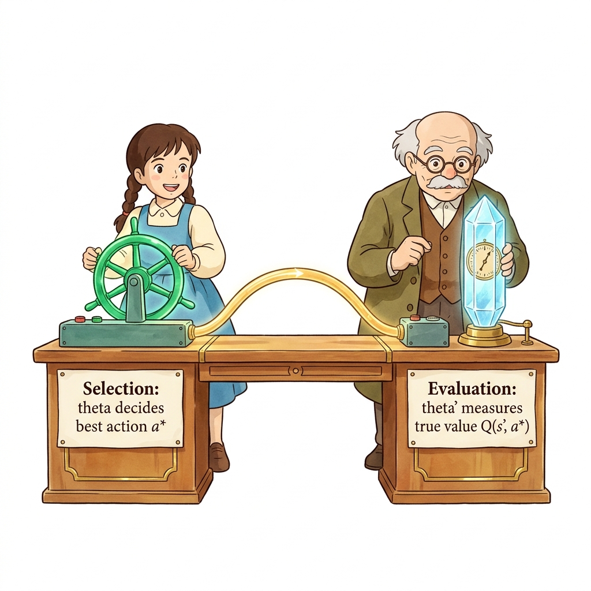
그림 12-4-09 행동 선택($\theta$)과 가치 평가($\theta’$)의 분리: 편향을 원천 차단하는 듀얼 콘솔거품이 꺼진 안정적인 수렴
Double DQN을 적용하면 비정상적으로 치솟던 Q-값의 거품이 사라지고, 신경망의 추정 곡선이 실제 환경의 참된 기대 수익을 정밀하게 따라가며 학습 속도와 최종 성능이 비약적으로 향상됩니다.
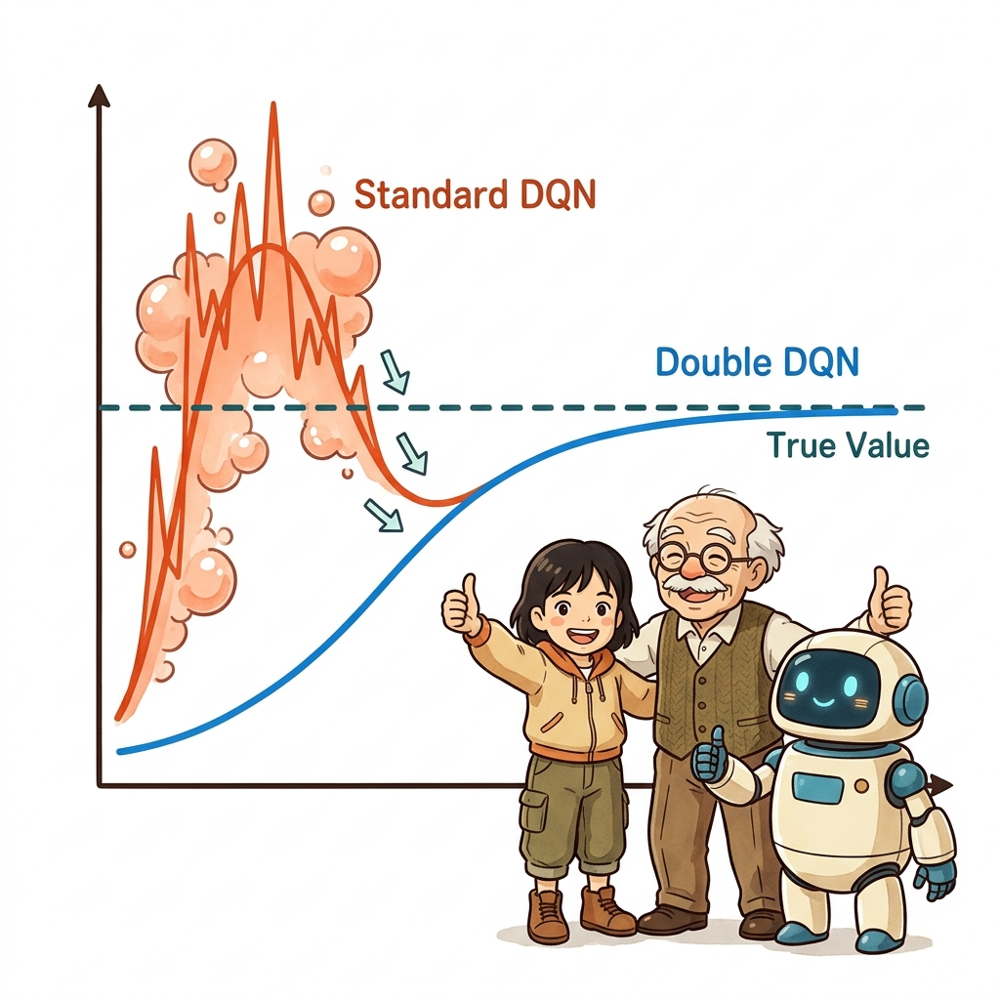
그림 12-4-10 편향 해소와 학습 안정화: 과대평가 거품이 꺼지고 참값을 안정적으로 추적하는 수렴과대평가 편향의 수학적 엄밀성
[!NOTE] 과대평가 편향이 수학적으로 왜 반드시 양수($\ge 0$)가 되는지, 그리고 두 신경망을 분리했을 때 왜 기댓값 차원에서 편향이 상쇄되는지에 대한 엄밀한 수학적 정리는 본 교재의 부록 C(Appendix C)에 상세히 증명되어 있습니다.
 그림 12-4-11 부록 C: 과대평가 편향 해소의 수학적 증명과 탄탄한 이론적 토대
그림 12-4-11 부록 C: 과대평가 편향 해소의 수학적 증명과 탄탄한 이론적 토대
12.4.2 우선순위 경험 재생(PER)
기존 균등 경험 재생(Uniform Replay)의 비효율
12.2절에서 다룬 기존 경험 재생 버퍼는 모든 경험 튜플 $E_t = (S_t, A_t, R_t, S_{t+1})$을 저장한 뒤, 학습할 때 모든 데이터를 동일한 확률($1/N$)로 무작위 균등 추출했습니다.
하지만 시험공부를 할 때 이미 100번 맞춰서 완벽히 아는 쉬운 문제와, 어제 풀다가 틀린 킬러 문제를 똑같은 빈도로 복습하는 것은 엄청난 시간 낭비입니다!
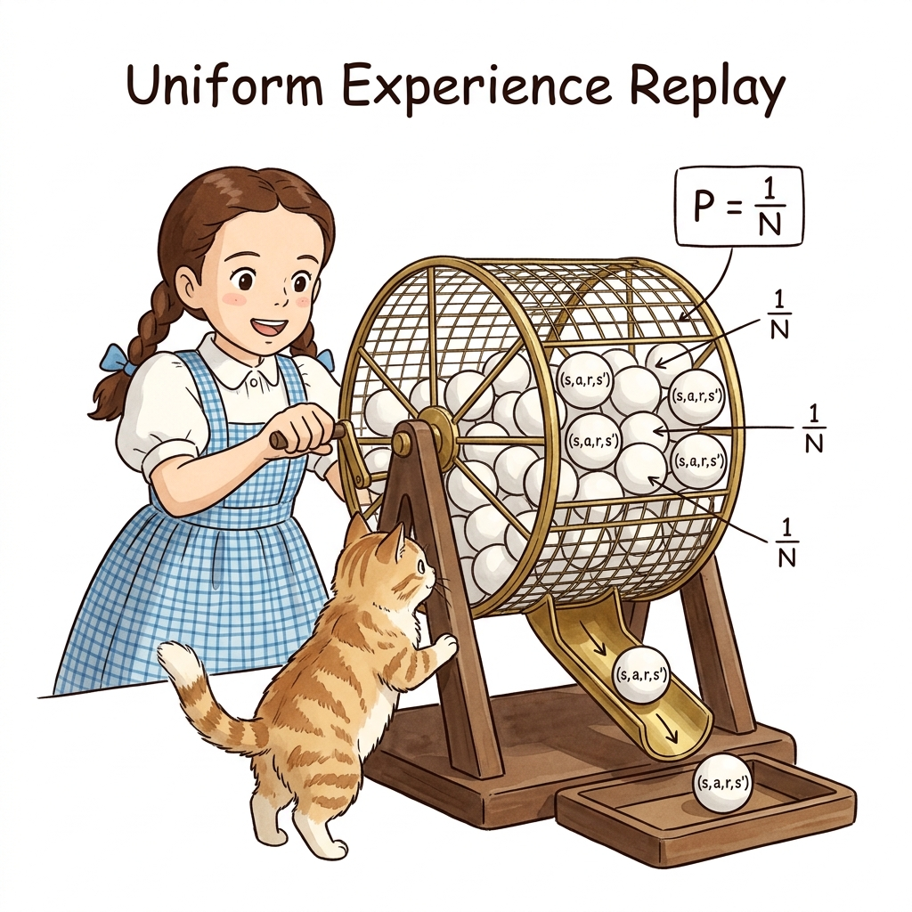
그림 12-4-12 기존 균등 경험 재생의 한계: 모든 경험이 중요도에 상관없이 동일한 $1/N$ 확률로 추출우선순위 경험 재생(PER)의 탄생: 오답 노트의 지혜
톰 샤울(Tom Schaul) 등이 제안한 우선순위 경험 재생(Prioritized Experience Replay; PER) [14]은 바로 이 ‘오답 노트’의 철학을 강화학습 버퍼에 이식한 기법입니다:
- 모든 경험을 똑같이 취급하지 않고, 에이전트가 아직 제대로 예측하지 못해 배울 점이 많은 중요한 경험에 높은 우선순위를 부여하여 더 자주 샘플링합니다.
 그림 12-4-13 우선순위 경험 재생(PER) 개념: 배울 점이 많은 중요한 경험에 황금 별을 매겨 우선 추출
그림 12-4-13 우선순위 경험 재생(PER) 개념: 배울 점이 많은 중요한 경험에 황금 별을 매겨 우선 추출
어떤 경험이 진짜 중요한 경험인가?
그렇다면 에이전트의 버퍼에 쌓인 수만 개의 경험 중, “배울 점이 많은 경험”은 도대체 어떤 기준으로 측정해야 할까요?
 그림 12-4-14 핵심 질문: 경험 데이터의 우선순위는 도대체 어떤 기준으로 정해야 할까?
그림 12-4-14 핵심 질문: 경험 데이터의 우선순위는 도대체 어떤 기준으로 정해야 할까?
우선순위의 척도: TD 오차 절댓값 $|\delta_t|$
그 답은 바로 벨만 방정식의 예측 차이인 시간차 오차(TD Error, $\delta_t$; 델타 티)의 크기입니다:
\[\delta_t = R_t + \gamma \max_a Q_{\theta'}(S_{t+1}, a) - Q_{\theta}(S_t, A_t)\]-
우선순위 지표: $ \delta_t = \big \text{목표값} - \text{현재 예측치} \big $ - TD 오차의 절댓값은 “에이전트가 그 순간에 느낀 놀람의 크기(Degree of Surprise)”를 대변합니다.
 그림 12-4-15 TD 오차 절댓값 $\delta_t$ 공식: 예상치와 실제 목표 사이의 놀람도(Surprise) 측정
그림 12-4-15 TD 오차 절댓값 $\delta_t$ 공식: 예상치와 실제 목표 사이의 놀람도(Surprise) 측정
$|\delta_t|$ 크기의 본질적 물리 의미
-
**오차가 큰 경험 ($ \delta_t \gg 0$): 에이전트의 예상이 완전히 빗나간 돌발 상황(절벽 추락, 갑작스러운 고득점 획득). 신경망 가중치를 대폭 수정해야 하는 **‘황금 원석 데이터’입니다. -
**오차가 거의 0인 경험 ($ \delta_t \approx 0$)**: 신경망이 이미 정확히 예측하고 있는 평범한 일상 주행 데이터. 다시 학습해 봐야 가중치 변화가 거의 없습니다.
 그림 12-4-16 $\delta_t$ 크기의 본질적 의미: 큰 오차(배울 게 많은 황금 원석) vs 작은 오차(이미 마스터)
그림 12-4-16 $\delta_t$ 크기의 본질적 의미: 큰 오차(배울 게 많은 황금 원석) vs 작은 오차(이미 마스터)
오차가 큰 경험: 긴급 수정 교훈
 그림 12-4-17 높은 TD 오차 (High $\delta_t$): 절벽 추락이나 돌발 고득점 등 에이전트에게 중요한 긴급 교훈
그림 12-4-17 높은 TD 오차 (High $\delta_t$): 절벽 추락이나 돌발 고득점 등 에이전트에게 중요한 긴급 교훈
오차가 작은 경험: 이미 통달한 데이터
 그림 12-4-18 낮은 TD 오차 (Low $\delta_t$): 이미 충분히 익숙하여 가중치 수정이 거의 필요 없는 일상 데이터
그림 12-4-18 낮은 TD 오차 (Low $\delta_t$): 이미 충분히 익숙하여 가중치 수정이 거의 필요 없는 일상 데이터
PER의 5-토큰 경험 카트리지
| 따라서 우선순위 경험 재생에서는 버퍼에 $(S_t, A_t, R_t, S_{t+1})$ 4개만 넣는 것이 아니라, **현재의 오차 태그 $ | \delta_t | $를 함께 묶어 5개 원소**를 저장합니다: |
 그림 12-4-19 오차 태그가 포함된 PER 5개 토큰 경험 카트리지: $(S_t, A_t, R_t, S_{t+1}, \delta_t)$
그림 12-4-19 오차 태그가 포함된 PER 5개 토큰 경험 카트리지: $(S_t, A_t, R_t, S_{t+1}, \delta_t)$
오차 비례 룰렛 샘플링 확률 계산
버퍼에 담긴 $N$개의 경험 데이터 중 $i$번째 경험이 미니배치로 뽑힐 확률 $p_i$는 오차 크기에 비례하는 룰렛 원판 형태로 결정됩니다:
\[p_i = \frac{|\delta_i|}{\sum_{k=1}^{N} |\delta_k|}\]-
$\sum_{k=1}^N \delta_k $: 버퍼에 있는 모든 데이터의 오차 총합 ($\sum$은 시그마로 발음) - 오차가 10배 큰 데이터는 10배 더 넓은 룰렛 칸을 차지하여, 미니배치로 추출될 확률이 10배 높아집니다!
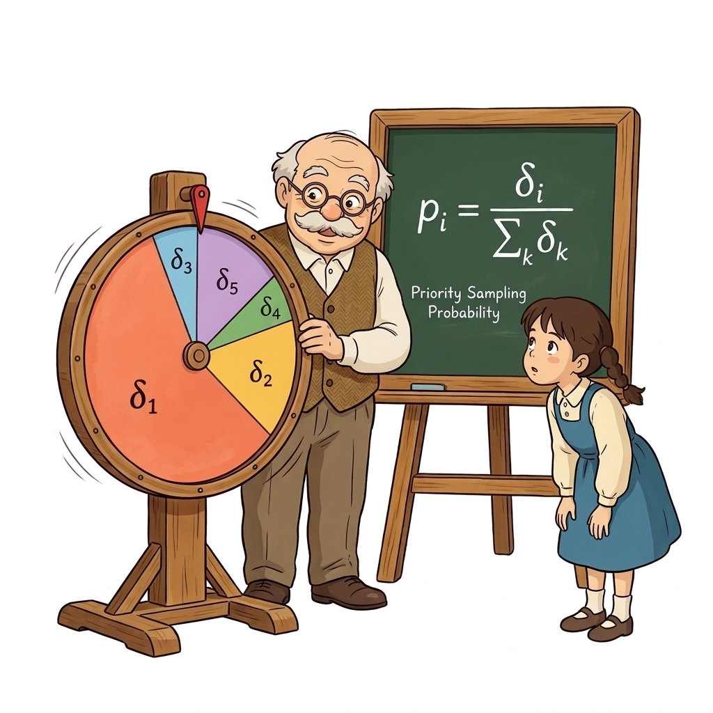
그림 12-4-20 오차 비례 확률 룰렛 원판과 계산 공식: $p_i = \delta_i / \sum \delta_k$황금 경험의 집중 추출과 초고속 학습
PER을 적용하면 에이전트는 평범한 데이터로 시간을 낭비하지 않고, 자신이 가장 취약했던 치명적 실수와 희귀한 대박 기회를 집중적으로 복습하게 됩니다.
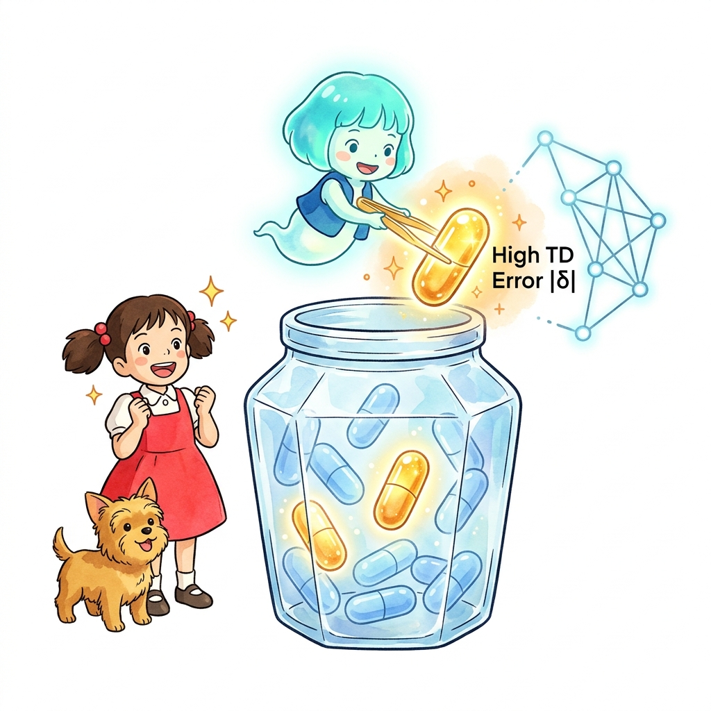
그림 12-4-22-B 대용량 경험 재생 수조에서 TD 오차가 큰 반짝이는 황금 캡슐(치명적 실수 및 극적인 성공 경험)을 선별 추출하여 집중 복습하는 지니와 도로시결과적으로 똑같은 10만 스텝을 학습하더라도, 기존 균등 버퍼 대비 수렴 속도가 2~3배 이상 비약적으로 빨라집니다.
 그림 12-4-22 PER을 통한 학습 속도 초고속 가속: 중요 경험 집중 학습으로 수렴 시간 단축
그림 12-4-22 PER을 통한 학습 속도 초고속 가속: 중요 경험 집중 학습으로 수렴 시간 단축
12.4.3 Dueling DQN
신경망 내부 구조의 근본적 혁신
세 번째 확장 기법인 Dueling DQN [15]은 학습 알고리즘이 아니라 신경망의 내부 아키텍처 자체를 뜯어고친 혁신입니다.
기존 Q-네트워크는 상태 $s$를 입력받아 각 행동의 $Q(s, a)$ 값을 한꺼번에 출력했습니다.
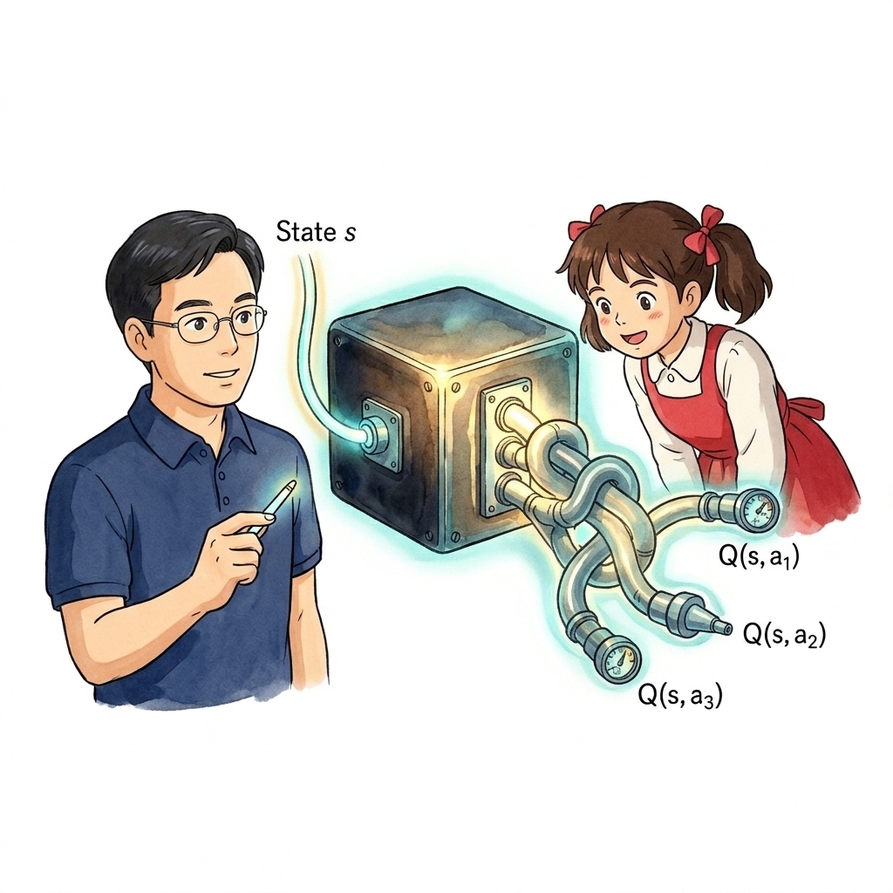
그림 12-4-23-B 하나의 블랙박스 큐브에서 모든 행동의 Q-값이 얽힌 채 출력되어 행동별 가치를 독립적으로 조율하기 어려운 기존 표준 Q-네트워크 구조Dueling DQN은 가치 함수를 구성하는 두 가지 본질적인 요소를 간파하고 이를 네트워크 안에서 분리했습니다:
- 상태 가치 $V(s)$: 내가 지금 처한 상황 자체가 얼마나 유리한가?
- 어드밴티지 $A(s, a)$: 그 상황에서 특정 행동 $a$를 취하는 것이 평균보다 얼마나 더 우월한가?
 그림 12-4-23 신경망 구조 자체의 혁신: 상태 가치와 행동 이점을 분리한 Dueling DQN의 서막
그림 12-4-23 신경망 구조 자체의 혁신: 상태 가치와 행동 이점을 분리한 Dueling DQN의 서막
어드밴티지 함수(Advantage Function)의 수학적 정의
어드밴티지 함수 $A_{\pi}(s, a)$는 행동 가치 $Q(s, a)$에서 상태 가치 $V(s)$를 뺀 값으로 정의됩니다:
\[A_{\pi}(s, a) = Q_{\pi}(s, a) - V_{\pi}(s) \tag{식 12.1}\]- $Q_{\pi}(s, a)$: 상태 $s$에서 행동 $a$를 취한 뒤 정책 $\pi$를 따랐을 때의 기대 수익
- $V_{\pi}(s)$: 상태 $s$에서 처음부터 정책 $\pi$에 맡겼을 때 얻는 평균 기대 수익
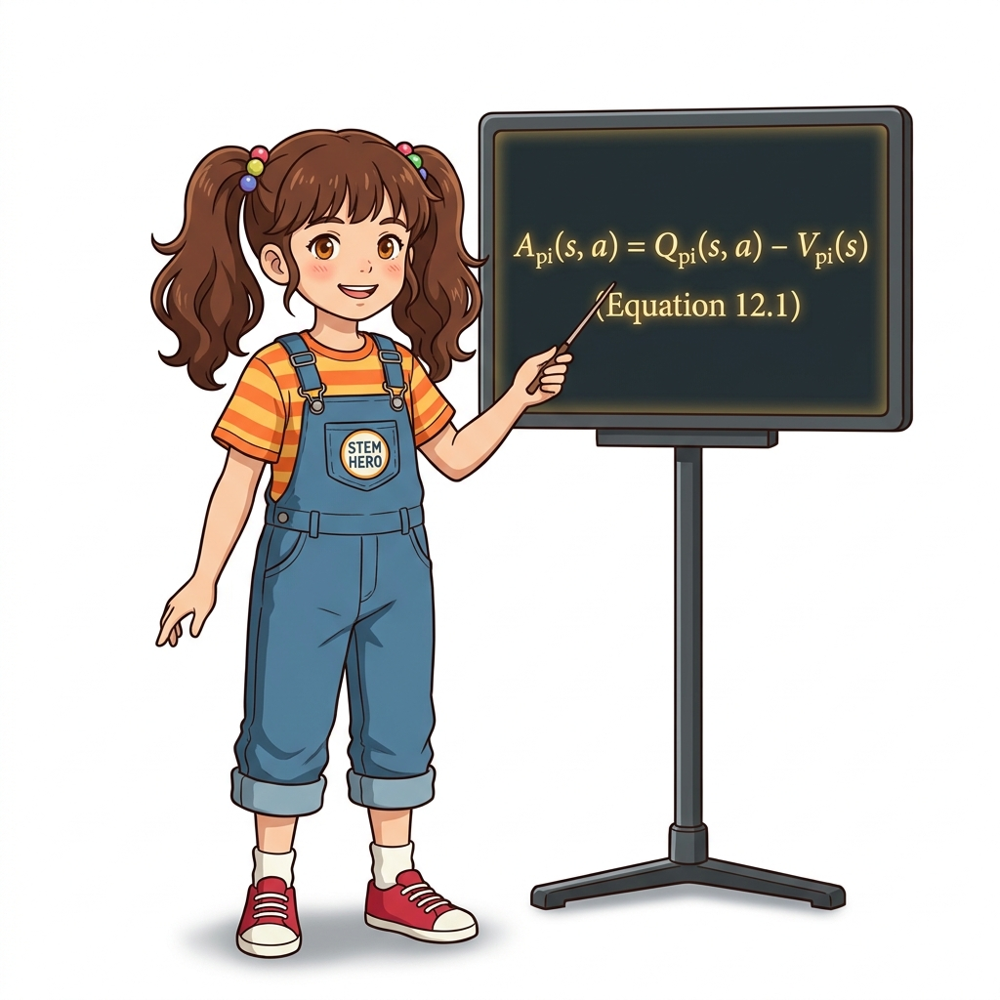
그림 12-4-24 어드밴티지 함수 공식: $A_{\pi}(s, a) = Q_{\pi}(s, a) - V_{\pi}(s)$ (식 12.1)어드밴티지 부호의 물리적 의미
- $A(s, a) > 0$ (양수): 이 행동은 정책의 평균적인 선택보다 더 이롭고 뛰어난 묘수입니다.
- $A(s, a) < 0$ (음수): 이 행동은 평균적인 선택보다 손해를 부르는 악수입니다.
- $A(s, a) \approx 0$: 평균 수준의 평범한 행동입니다.
즉, 어드밴티지는 상태의 좋고 나쁨과 무관하게 오직 “행동 간의 상대적 우열”만을 순수하게 분리해 낸 지표입니다.
가치 함수와 어드밴티지의 결합
[식 12.1]의 이항 정리를 통해, 우리가 구하고자 하는 최종 $Q(s, a)$는 상태 가치와 어드밴티지의 합으로 재구성할 수 있습니다:
\[Q_{\pi}(s, a) = V_{\pi}(s) + A_{\pi}(s, a) \tag{식 12.2}\]Dueling DQN의 Y자 분기 아키텍처
Dueling DQN은 이 수학적 원리를 신경망에 그대로 구현했습니다:
 그림 12-13 기존 표준 DQN(위)과 Dueling DQN(아래)의 내부 아키텍처 비교
그림 12-13 기존 표준 DQN(위)과 Dueling DQN(아래)의 내부 아키텍처 비교
- 입력층과 초기 특징 추출 계층(합성곱 또는 은닉층)은 두 갈래가 공통으로 공유합니다.
- 마지막 단계에서 네트워크가 Y자 모양으로 갈라집니다:
- 가치 스트림(Value Stream): 크기 1의 스칼라 값 $V(s)$를 출력
- 어드밴티지 스트림(Advantage Stream): 행동 개수 크기의 벡터 $A(s, a)$를 출력
- 두 스트림을 합산하여 최종 $Q(s, a)$ 벡터를 조립합니다.
실전 구현 시의 식별성(Identifiability) 문제 해결
단순히 $Q = V + A$로 더하면, $V$에 임의의 상수 $C$를 더하고 $A$에서 $C$를 빼도 똑같은 $Q$가 나오므로 신경망이 $V$와 $A$를 고유하게 분해(학습)하지 못합니다.
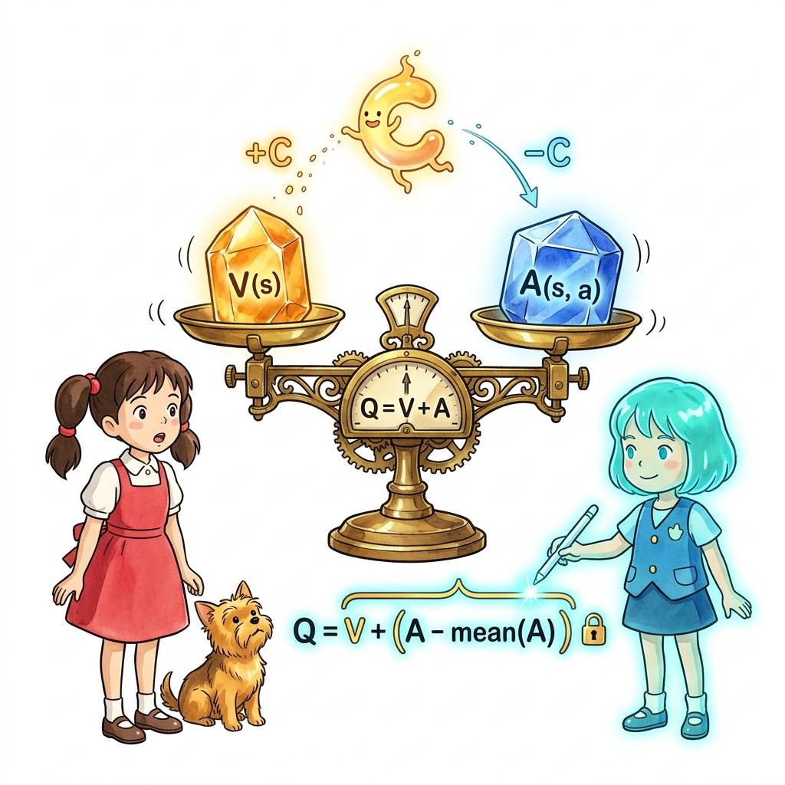
그림 12-4-31-B 상수 C에 의해 흔들리는 Q = V + A의 미식별성 저울을 어드밴티지 평균 차감 수식으로 안정적으로 고정하는 지니의 해법이를 해결하기 위해 Dueling DQN 논문에서는 어드밴티지의 평균값을 빼주는 기발한 정규화 수식을 사용합니다:
\[Q(s, a; \theta, \alpha, \beta) = V(s; \theta, \beta) + \Big( A(s, a; \theta, \alpha) - \frac{1}{|\mathcal{A}|} \sum_{a'} A(s, a'; \theta, \alpha) \Big)\]- 이 식 덕분에 가치 스트림은 정확하게 상태의 평균 가치 $V(s)$로 수렴하고, 어드밴티지는 평균이 0인 상대적 편차로 완벽하게 안정화됩니다.
왜 Dueling DQN이 압도적으로 유리한가?
[!TIP] 행동이 결과에 영향을 주지 않는 수많은 순간들
고속도로 운전 중 앞차가 수 킬로미터 앞에 있을 때, 액셀을 밟든 핸들을 가만히 두든 당장 사고가 나지 않습니다. 중요한 것은 ‘현재 도로가 안전하다’는 상태 가치 $V(s)$ 자체입니다.
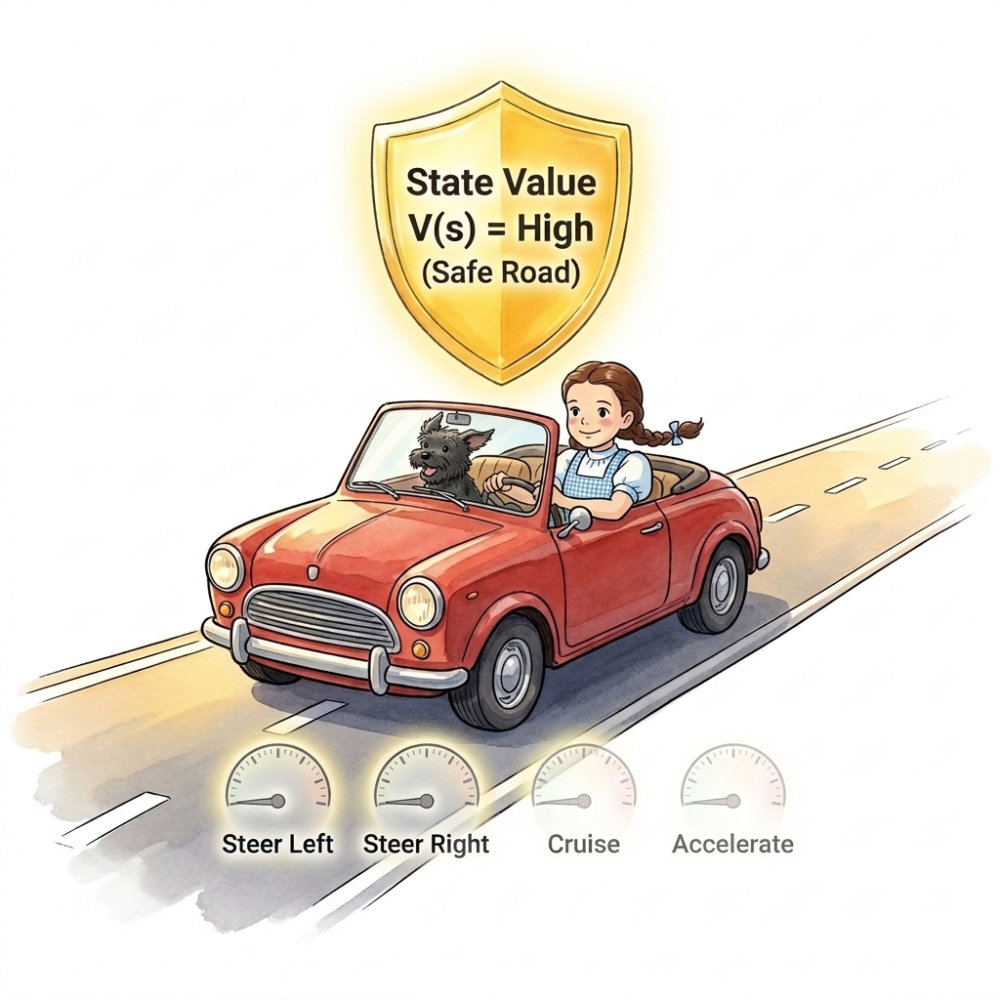
그림 12-4-32-B 앞차가 멀리 있는 안전한 고속도로에서는 어떤 조작을 하든 안전하므로 상태 가치 V(s)가 학습의 대부분을 지배하는 직관적 비유- 기존 DQN: 어떤 행동이 안전한지 확인하려면 좌회전, 우회전, 정지 등 모든 행동을 한 번씩 다 해봐야만 각각의 $Q$를 겨우 배울 수 있었습니다.
- Dueling DQN: $V(s)$ 분기 하나만 학습되면, 에이전트가 직접 해보지 않은 모든 행동들의 $Q(s, a)$ 가치가 한꺼번에 동시에 갱신됩니다!
 그림 12-4-32 불가피한 실점 상황에서 기존 DQN의 한계: 모든 행동을 다 해봐야만 학습 가능
그림 12-4-32 불가피한 실점 상황에서 기존 DQN의 한계: 모든 행동을 다 해봐야만 학습 가능
상태 가치 V(s) 하나로 모든 행동 동시 갱신
〈퐁〉에서 공이 이미 플레이어 골대로 빨려 들어가는 불가피한 실점 상황에서도, Dueling DQN은 패들을 위로 올렸든 가만히 있었든 상관없이 $V(s)$가 $-1$점으로 하락하면서 모든 행동의 Q-값을 즉각 업데이트합니다.
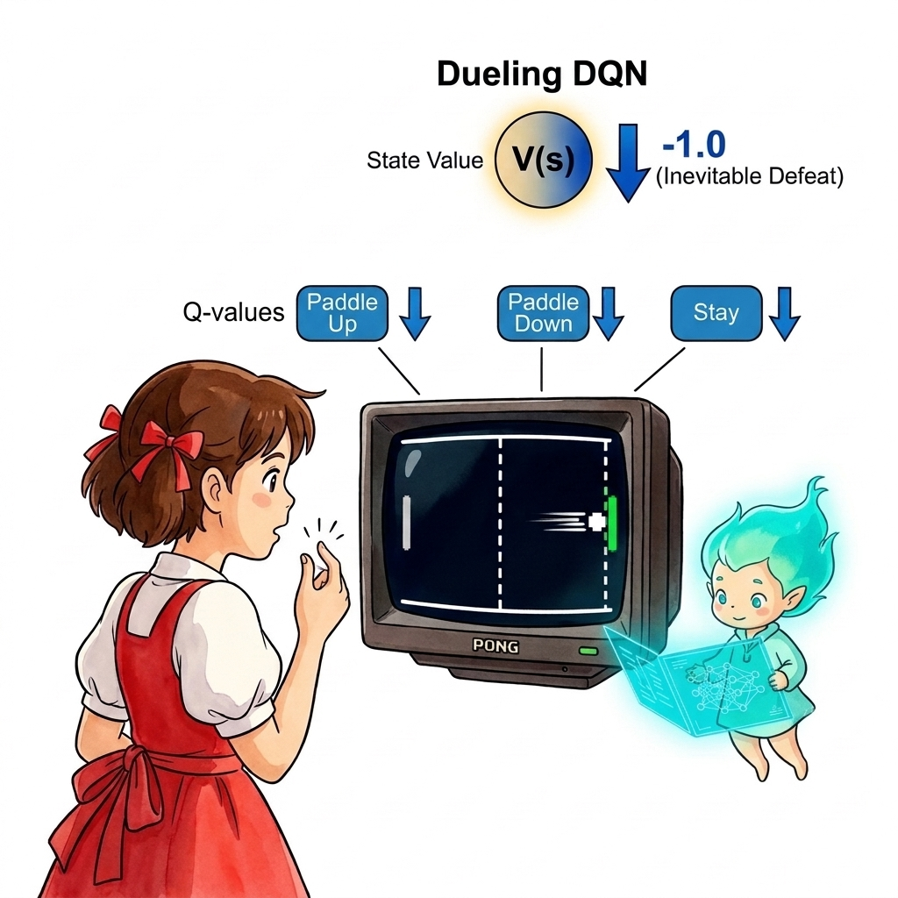
그림 12-4-33-B 불가피한 실점 상황에서 상태 가치 V(s)가 -1로 하락함과 동시에 모든 행동의 Q-값이 즉시 동기화되어 학습 효율을 극대화하는 Dueling DQN이러한 탁월한 일반화 능력 덕분에 Dueling DQN은 학습 효율을 극대화합니다.
 그림 12-4-33 Dueling DQN의 번개 같은 깨달음: 상태 가치 $V(s)$ 하나만 배워도 모든 행동 Q값 즉각 갱신
그림 12-4-33 Dueling DQN의 번개 같은 깨달음: 상태 가치 $V(s)$ 하나만 배워도 모든 행동 Q값 즉각 갱신
[실습] DQN 3대 확장 기술 종합 검증
앞서 살펴본 Double DQN 편향 제거, PER 확률 룰렛, Dueling DQN 분기 연산을 직접 구현한 step01_dqn_extensions_demo.py의 핵심 코드를 확인해봅시다:
# 1. Double DQN: 행동 선택(argmax)과 가치 평가(theta_prime) 분리
best_action = np.argmax(q_theta[next_state])
td_target = reward + gamma * q_target[next_state, best_action]
# 2. PER: TD 오차 절댓값 비례 확률 계산
probabilities = deltas / np.sum(deltas)
# 3. Dueling DQN: 평균 차감 재결합 공식
Q = V + (A - np.mean(A, axis=1, keepdims=True))
[실습 결과] 터미널 출력 화면 및 수치 검증
스크립트를 구동하면 3대 확장 기술의 수학적 효과가 선명한 수치로 입증됩니다:
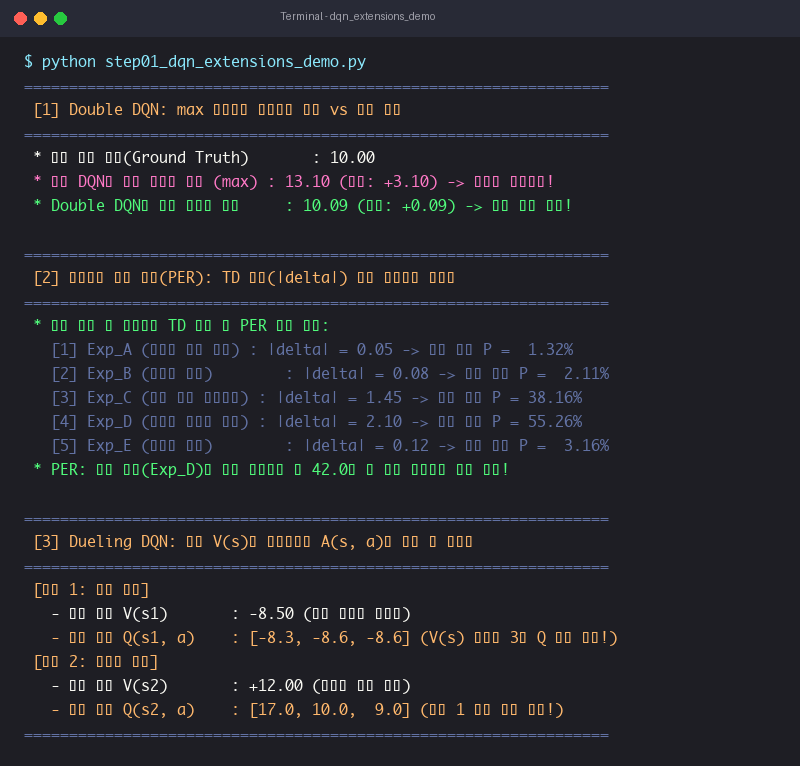
그림 12-4-T1 DQN 3대 확장 기술 검증 터미널 실행 결과 (ch12_4_step01_terminal.png)
- Double DQN: 참값 10.00 대비 표준 DQN은 $13.10$(+3.10 거품)으로 폭증한 반면, Double DQN은 $10.09$(+0.09)로 편향을 완벽히 제거했습니다.
- PER: 돌발 보너스 경험(Exp_D)이 일상 경험(Exp_A)보다 무려 42배 높은 확률(55.26%)로 집중 추출되었습니다.
- Dueling DQN: $V(s_1) = -8.50$ 하나를 학습함으로써 위기 상황의 모든 행동 Q-값이 일괄 하향 갱신되었습니다.
[실습 시각화] 편향 해소 히스토그램과 PER 샘플링 분포
step01_dqn_extensions_demo.py가 생성한 분석 그래프입니다:
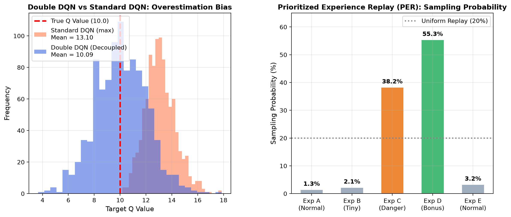
그림 12-4-G1 Double DQN의 과대평가 편향 제거 히스토그램(좌) 및 PER의 중요도 비례 샘플링 확률 바차트(우)6대 확장의 집대성: Rainbow DQN
2017년 딥마인드는 마테오 헤셀(Matteo Hessel)을 중심으로 지금까지 제안된 독립적인 DQN 개선 기법들을 하나로 통합하면 어떤 결과가 나올지 실험했습니다:
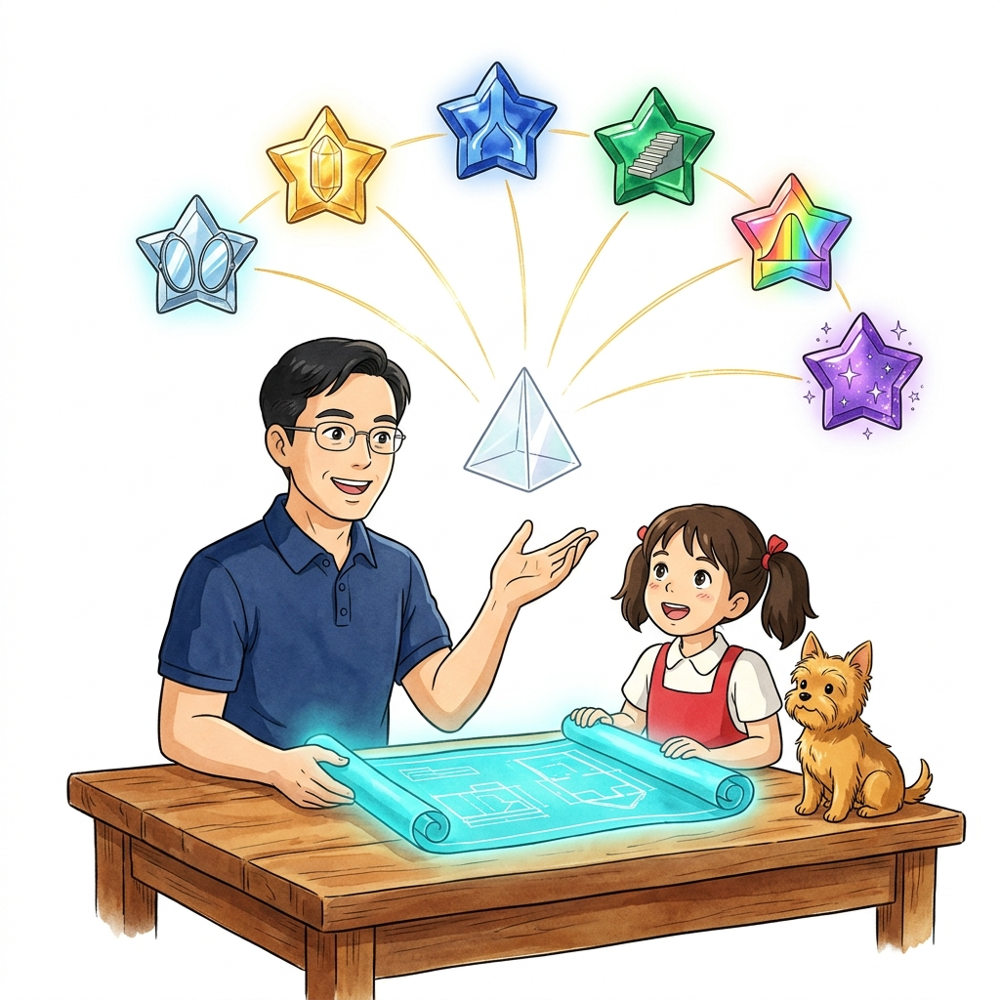
그림 12-4-34-B 독립적으로 발전해 온 6대 핵심 확장 기법(Double DQN, PER, Dueling, Multi-step, Distributional, Noisy Nets)을 하나의 통합 청사진으로 엮어내는 교수님과 도로시- DQN (기본형)
- Double DQN (과대평가 편향 제거)
- Prioritized Experience Replay (중요 경험 집중 학습)
- Dueling Network (상태 가치와 어드밴티지 분리)
- Multi-step Learning (N-스텝 부트스트래핑)
- Distributional RL (가치 기댓값 대신 확률 분포 학습)
- Noisy Nets (파라미터 노이즈를 통한 지능적 탐험)
이 6가지 기법을 단 하나의 통합 아키텍처로 융합한 것이 바로 무지개빛 ‘레인보우(Rainbow) DQN’입니다.
Rainbow는 아타리 57개 전 게임에서 기존의 모든 기록을 압도적으로 갈아치우며 가치 기반(Value-Based) 심층 강화학습의 최고봉에 등극했습니다.
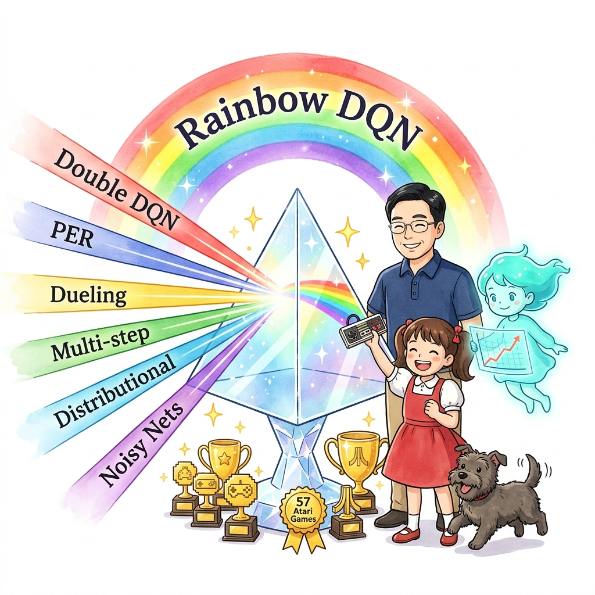
그림 12-4-35-B 6대 확장 기법이 무지개빛 프리즘으로 융합되어 아타리 57개 전 게임을 정복하고 가치 기반 강화학습의 정상에 오른 Rainbow DQN의 쾌거